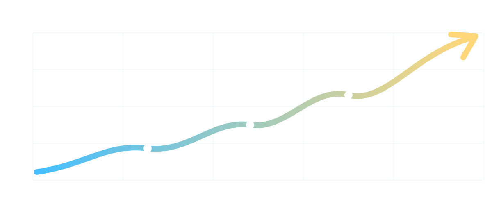

Fractional Analytics Consulting
Fractional analytics leadership for teams that need senior ownership.
Parallax helps teams maintain and evolve the decision system as priorities shift, keeping BI reporting, dashboards, metrics, cadence, and accountability aligned over time.
At a glance
First Step & Length Free fit check first; weekly leadership support scoped monthly after priorities are confirmed
Best Fit Your team needs support for roadmap execution, report governance, dashboard review, and a stronger analytics operating rhythm
Outcome Ongoing senior ownership and governance that maintains and evolves the decision system as priorities shift
What this is
Decision Reset creates the system. Fractional Analytics maintains and evolves it.
Steward the system
Keep decision logic, metric definitions, and ownership current as the business changes.
Provide senior judgment
Bring experienced analytics leadership into prioritization, tradeoffs, and executive decision support.
Fit
Use fractional analytics when the work needs ownership, cadence, and judgment.
Strong fit
Decisions slow down despite having data.
Metrics exist but do not reliably trigger action.
Ownership changes or priorities shift frequently.
You need senior analytics leadership before hiring full time.
Not the right fit
You only need one-off dashboards or ad hoc analysis.
Leadership is not ready to act on defined thresholds.
Your decision owners, triggers, and escalation paths are already stable.
What you get
Fractional leadership across the operating layer of analytics.
Decision system maintenance
Refresh decision inventories, owners, thresholds, and trigger logic as operations evolve.
Operating cadence support
Shape review rhythms around signals, decisions, action follow-up, and escalation.
Measurement reliability
Govern metric definitions, reduce conflicting KPIs, and watch for silent data breakage.
What you get each month
A concrete operating rhythm, not a vague advisory retainer.
Each month is structured around the decisions, metrics, and ownership routines that need to stay reliable as the business changes.
01
Monthly decision system review
Review the highest-priority decisions, owners, triggers, and open follow-ups so reporting stays tied to action.
Typical output
Decision inventory updates
Owner and escalation cleanup
Priority changes for the next cycle
02
Metric reliability and definition pass
Audit key metrics for drift, duplicated logic, unclear filters, and definitions that no longer match how the business operates.
Typical output
Metric definition notes
Logic fixes or cleanup requests
Known trust risks surfaced early
03
Analytics priority backlog
Convert scattered reporting requests into a ranked backlog based on business value, urgency, complexity, and decision impact.
Typical output
Ranked analytics backlog
Build vs defer recommendations
Scope notes for top priorities
04
Executive signal readout
Summarize what changed, why it matters, and which decisions need attention before leaders get buried in dashboards.
Typical output
Signal summary
Decision risks and blockers
Recommended leadership focus
05
Action log and ownership follow-up
Track which actions were assigned, what moved, what stalled, and where escalation is needed to keep analytics useful.
Typical output
Action register
Owner follow-up notes
Open decision blockers
06
Standards and enablement updates
Document the rules, naming conventions, metric decisions, and operating standards your team needs to keep the system stable.
Typical output
Standards updates
Team enablement notes
Reusable decision logic
Typical 30 / 60 / 90 day plan
The first 90 days turn senior ownership into a repeatable operating cadence.
The exact scope depends on the team, but the arc usually moves from stabilization, to standards, to a rhythm the business can keep running.
30
First 30 days: stabilize the operating picture
Clarify the current decision system, find the highest-risk trust breaks, and identify where analytics is slowing the business down.
Typical action plan
Inventory recurring leadership decisions
Map core metrics to decision owners
Flag duplicated logic and fragile reports
Define the first monthly operating cadence
60
Days 31-60: standardize how work gets done
Convert the early findings into rules, priorities, ownership expectations, and practical cleanup work the team can execute.
Typical action plan
Create metric standards for priority KPIs
Rank analytics backlog by decision impact
Define trigger and escalation patterns
Reduce low-value reporting requests
90
Days 61-90: scale the rhythm
Move from one-time cleanup into a repeatable management rhythm that keeps analytics aligned as priorities shift.
Typical action plan
Run the operating review cadence
Publish ownership and standards updates
Track decisions, blockers, and outcomes
Identify next reset or intelligence opportunities
Engagement shape
The role flexes based on how much ownership your team needs.
Advisor
Senior direction without taking over daily operations.
Best when your team needs sharper judgment, prioritization, standards, and a reliable outside lens.
Hover to see a role example
Advisor example
Quarterly analytics direction without taking over execution.
Context
A leadership team has dashboards and internal analysts, but the backlog keeps growing and no one is sure which work should matter most.
What comes with it
Priority scoring for analytics requests
Metric definition and dashboard standards review
Leadership recommendation on what to fix, defer, or stop
Move away to return to summary
Advisor example Quarterly analytics direction without taking over execution. Context A leadership team has dashboards and internal analysts, but the backlog keeps growing and no one is sure which analytics work should matter most.
What comes with it Priority scoring for analytics requests Metric definition and dashboard standards review Leadership recommendation on what to fix, defer, or stop Move away to return to summary
Operator
Active support across cadence, metrics, and execution.
Best when analytics needs help moving from advice into repeatable operating discipline.
Hover to see a role example
Operator example
Active operating support for cadence, metrics, and execution.
Context
The team has recurring reporting issues, inconsistent follow-through, and too many loose requests moving through informal channels.
What comes with it
Weekly or biweekly analytics operating cadence
Ownership cleanup for definitions, blockers, and fixes
Managed action log, roadmap, and follow-up rhythm
Move away to return to summary
Operator example Active operating support across cadence, metrics, and execution. Context The team has recurring reporting issues, inconsistent follow-through, and too many loose requests moving through informal channels.
What comes with it Weekly or biweekly analytics operating cadence Ownership cleanup for definitions, blockers, and fixes Managed action log, roadmap, and follow-up rhythm Move away to return to summary
Embedded Partner
Recurring analytics leadership integrated into how the business runs.
Best when the organization needs senior ownership close to leadership rhythms and decision workflows.
Hover to see a role example
Embedded Partner example
Recurring senior analytics ownership inside leadership rhythms.
Context
Leadership needs analytics close to operating decisions, but a full-time senior analytics leader is not the right move yet.
What comes with it
Recurring leadership readouts and decision support
Governance upkeep for metrics, owners, and standards
Ongoing roadmap alignment across priorities and reporting owners
Move away to return to summary
Embedded Partner example Recurring senior analytics ownership inside leadership rhythms. Context Leadership needs analytics close to operating decisions, but a full-time senior analytics leader is not the right move yet.
What comes with it Recurring leadership readouts and decision support Governance upkeep for metrics, owners, and standards Ongoing roadmap alignment across priorities and reporting owners Move away to return to summary

Outcomes
Analytics becomes a managed operating discipline instead of a recurring scramble.
Faster decisions
Leaders stop revisiting the same metric debates and move to action sooner.
Clearer ownership
Every meaningful signal has a responsible owner and a visible escalation path.
Metrics that stay useful
Definitions, thresholds, and dashboards evolve with the business instead of decaying.
Start here
See whether fractional analytics leadership is the right next move.
The free fit check clarifies whether you need a paid Health Check, a focused reset, ongoing senior ownership, or a lighter advisory path. Decision Reset creates the system; Fractional Analytics maintains and evolves it.